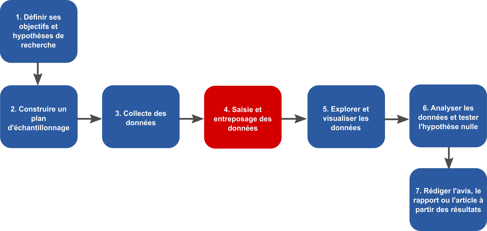

- Ces diapositives sont disponibles en version web et en PDF.
- L'ensemble du matériel de cours est disponible sur la page du portail moodle.
Séance 3: L'organisation des données - 1
BIO 500 - Méthodes en écologie computationnelle
Dominique Gravel & Steve Vissault
Laboratoire d'écologie intégrative
Séance 3
L'organisation des données
Où sommes-nous?

Le Tesseract de la biologie

- Il est difficile de stocker les données écologiques dans un tableau excel (n-2) lorsque les données écologiques ont (n-4).
Les bases de données (BDs) à la rescousse

- Les BDs permettent de redimensionner ce problème (plusieurs tableaux de n-2 avec des relations).
- Chaque table corresponds à une dimension. Les tables sont liées entre-elles par des relations. Cette structure est appelé schéma en étoile
Avantages des bases de données
- Maintenir l'intégrité entre les enregistrements de nos tableaux. Une observation ne peut être faite sur un site qui n'existe pas.
- Normaliser et contrôler la qualité des données. Chaque colonne est un type précis de données. Des contraintes peuvent être établies sur chaque colonne.
- Éviter les redondances dans le stockage de l'information (obtenir une forme normale), voir la section Format de donnée du cours 2.
Avantages des bases de données
Autres avantages indéniables:
- Gain de temps et de performance.
- Séparer les données brutes des données destinées aux analyses.
- Flexibilité dans la préparation des données pour les analyses.
- Multi-utilisateurs grâce à l'approche client-serveur.
L'approche client-serveur

- Le serveur est un ordinateur contenant la base de données.
- Le serveur peut être votre machine, on se connectera alors localement (Généralement, environnement de développement).
- Si le serveur est quelque part d'autre (accessible via le réseau), on parlera de serveur distant (Généralement, environnement de production).
L'approche client-serveur
Le client peut être un logiciel tout comme un langage installé sur votre ordinateur. On se sert de ce langage ou logiciel pour interagir avec le serveur de base de données présent localement ou à distance.
On peut donc avoir plusieurs clients sur un même ordinateur.
L'approche client-serveur


- Il existe une grande diversité de clients, mais nous utiliserons essentiellement ces trois là:
- pgadmin3: logiciel avec une interface graphique.
- R: language de programmation scientifique.
- psql: un autre language pratique à savoir (si le temps le permet).
Note: La plupart des langages de programmation disposent de librairies permettant de se connecter à une base de données sur un serveur local ou distant.
L'approche client-serveur
Le client se connecte pour réaliser différentes opérations:
- Créer une base de données
- Créer des tables et établir des relations
- Insérer des données
- Interroger les données par requête
- Supprimer des données ou des tables
- Mettre à jour des données ou des tables
- Supprimer la base de données
L'approche client-serveur
Le serveur répond avec des données, des messages d'erreurs ou des status (e.g. Données insérées).
L'approche client-serveur avec multi-utilisateurs
On pourrait envisager la situation suivante...

L'approche multi-utilisateurs peut uniquement se faire si le serveur est distant.
Les Systèmes de gestion de base de données
Les Systèmes de gestion de base de données
- Les base de données sont présente sur un serveur.
- Pour créer, interroger, gérer et maintenir des bases de données on utilisera un Système de Gestion de Base de Données (souvent appelé SGBD) installée sur le serveur.
La diversités des SGBDs
Il en existe une multitude:

- Mais ces systèmes disposent tous d'un dénominateur commun: le
langage SQL - Dans ce cours, nous utiliserons le système de gestion de données
PostgreSQL.
Le langage SQL
Définition
Le SQL (Structured Query Language) est un langage permettant de communiquer avec une base de données.
Le langage SQL
Le SQL permet:
- Créer une base de données (
CREATE DATABASE). - Créer des tables et établir des relations (
CREATE TABLE) - Insérer des données (
INSERT) - Interroger les données par requête (
SELECT) - Supprimer des données ou des tables (
DROP,DELETE) - Mettre à jour des données ou des tables (
UPDATE,ALTER). - Supprimer la base de données (
DROP DATABASE).
Chacune de ces commandes est une instruction SQL envoyée au serveur pour manipuler et interroger la base de données.
Le langage SQL
Pour cette séance, nous nous attaderons seulement à:
- Créer une base de données (
CREATE DATABASE). - Créer des tables et établir des relations (
CREATE TABLE). - Supprimer des tables (
DROP TABLE). - Supprimer la base de données (
DROP DATABASE).
Soyez attentif car le travail de cette semaine consiste écrire un script qui permet la création de la base de données (tables et relations) pour entreposer vos données que vous avez collecté lors de la séance 2.